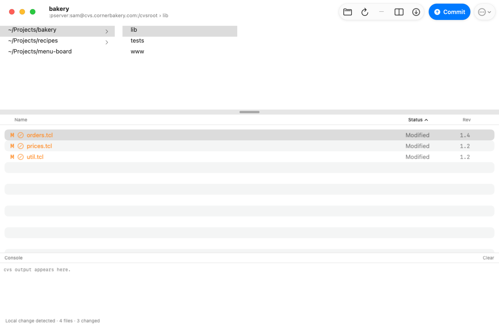
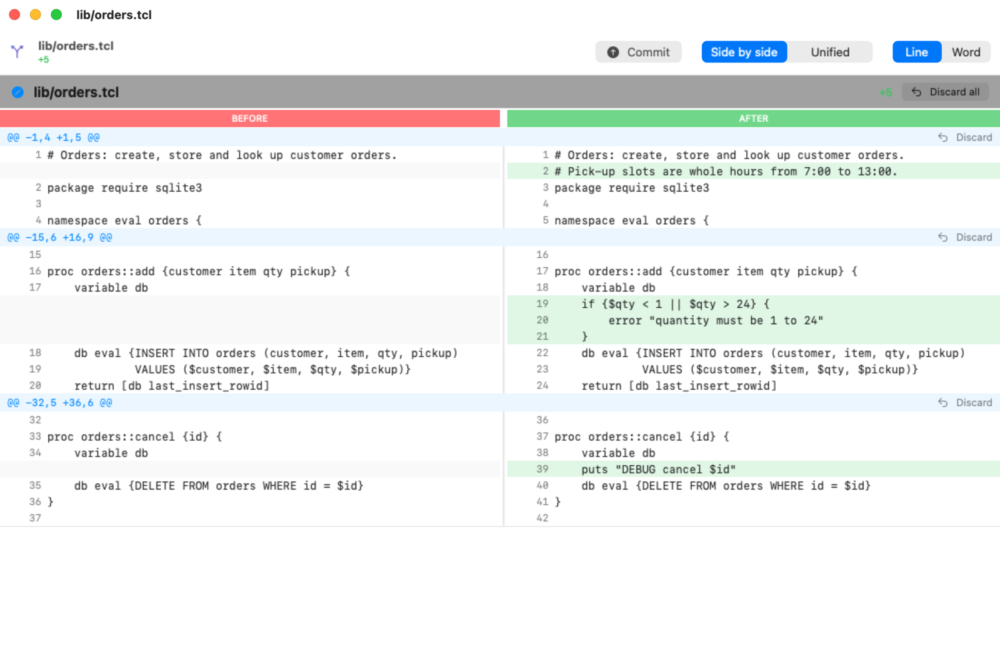
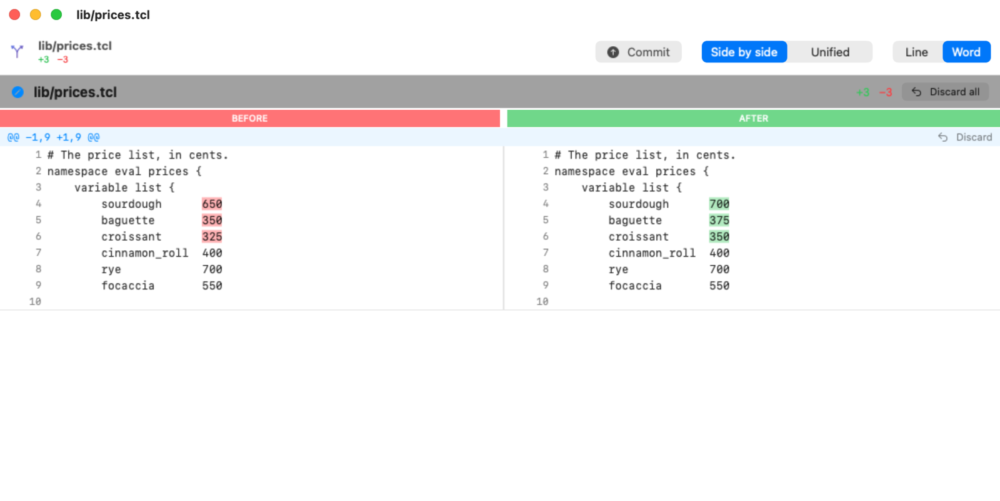
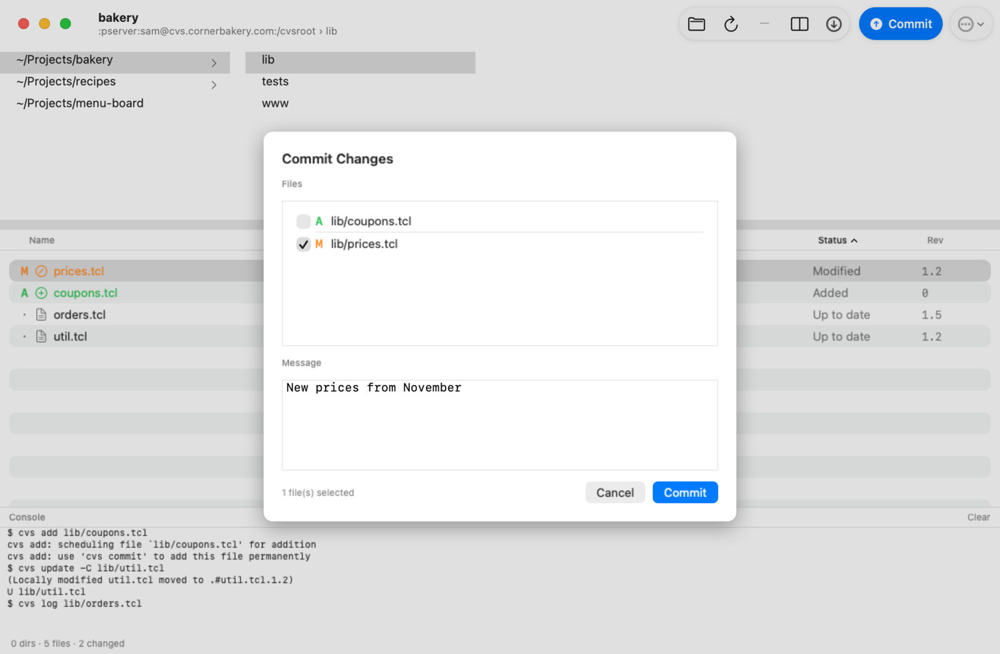
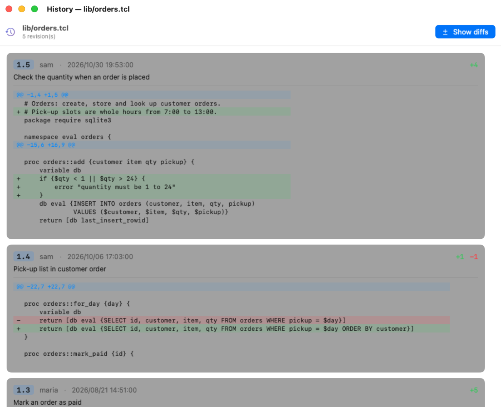

MacCVS
MacCVSMacCVS Help
MacCVS is a native Mac app for working with CVS. Open a working copy and you see every file's status and revision, what you've changed the moment you save it, and a clear side-by-side diff. From there you can commit, update, add, revert and read each file's history, without typing cvs commands.
Getting started
Download the latest zip from the Releases page, unzip it and drag MacCVS to Applications. It's signed with an Apple Developer ID and notarized by Apple, so it opens like any other app.
- Nothing else to install — MacCVS has its own copy of
cvsinside the app (CVS 1.11.23, Apple silicon and Intel) and always uses that one. You don't need CVS on your Mac. - Use the working copies you already have — MacCVS opens any folder you checked out with
cvs checkout. It reads the usualCVS/folders, so it works alongside the command line. - Passwords — for a
:pserver:repository, the password comes from~/.cvspass, the filecvs loginwrites. Log in once from Terminal and MacCVS uses it too.

The main window: projects and folders at the top, the files in the chosen folder below, and the console at the bottom.
Opening a working copy
- File ▸ Open Working Copy… (⌘O) or the Open toolbar button — choose the top folder of a checked-out module (the one with a
CVSfolder inside). - File ▸ Open Recent — the working copies you've opened before.
- It picks up where you left off — when you start MacCVS again it reopens the same working copy, the same folder, and re-selects the files you had selected.
Projects and folders
The top half of the window is a Finder-style column browser.
- The first column lists your projects — every working copy you've opened. Click one to switch to it.
- Each further column is a folder — click a folder to see its files in the list below.
- Right-click a project for Name Repository… (give it a friendly name, shown next to its path), Forget (remove it from the list; nothing on disk is touched) and Reveal in Finder.
- Make it taller or shorter — drag the bar between the columns and the file list. MacCVS remembers the height.
The window title shows the project, and the subtitle shows its CVS repository and the folder you're in.
The file list
The bottom half lists the files in the chosen folder with their Status and Rev (the revision you have). Click a column heading to sort by it; click again to reverse. Sorting by Status puts the files that need attention at the top.
| M Modified | You've changed it since your last update or commit. |
| A Added | Scheduled to be added at the next commit. |
| R Removed | Scheduled to be removed at the next commit. |
| U Needs update | Someone committed a newer revision; Update to get it. |
| G Needs merge | Changed both by you and in the repository; Update merges them. |
| C Conflict | A merge left conflict markers in the file; fix them, then commit. |
| ! Missing | CVS knows it but it's not on disk. |
| ? Unknown | Not under CVS (shown only with Show Non-CVS Files). |
- Double-click a file to see its diff. Double-click a folder (or press Return) to go into it; ⌘↑ goes back up.
- Select several files with ⌘-click or ⇧-click; most commands work on the whole selection.
- Right-click for Diff, Log, Update, Add, Revert and Reveal in Finder.
- View ▸ Show Hidden Files (⌘⇧.) and View ▸ Show Non-CVS Files (⌘⇧U) — both off at first, so you see only the files CVS tracks.
Seeing what changed
- The moment you save — MacCVS watches the folder you're looking at. Save a file in any editor and it turns to Modified straight away. It decides this the way CVS itself does, by comparing the file's date with the one recorded in
CVS/Entries, so there's no wait for the server. - Instant diffs — as soon as a file changes, MacCVS quietly fetches the version you started from and keeps it, so opening the diff later is immediate.
- Refresh (⌘R or the toolbar button) asks the server as well, which is how you find files that others have changed (Needs update).
The status bar at the bottom sums up the folder: how many folders and files, and how many are changed.
The diff window
Select a file and press Diff (⌘D), or double-click it. Select several files to see all their diffs in one window.

Before on the left, after on the right, with the added and removed lines counted in the header.
- Side by side / Unified — two panes, or one list with removed and added lines interleaved.
- Line / Word — highlight whole changed lines, or only the words that changed within them.
- Drag the divider between the two panes to give one side more room. Each pane scrolls its own long lines sideways; scrolling up and down keeps both in step.
- The window sizes itself to fit what it's showing.

Word mode: only the changed words are highlighted.
Discarding changes
Every change (hunk) in the diff window has a Discard button, and every file has Discard all. Discard puts just that part of the file back the way it was in the repository and leaves your other changes alone. The diff redraws at once, and a window with nothing left in it closes by itself.
Discarding changes the file on disk. There's no undo, so look at the hunk first.
Committing
- From the main window — press the Commit button at the top right (⌘K). The sheet lists every modified, added and removed file in the folder, each with a checkbox. It ticks the files you had selected, or all of them if you hadn't selected any. Write a message and press Commit.
- From the diff window — once you've checked the changes, press Commit in the diff window's header to commit exactly the files it shows. The window closes when the commit is done.

Pick the files, write a message, commit.
Updating
- Update (⌘U or the toolbar button) with nothing selected updates the folder you're looking at (not its sub-folders), picking up new folders and pruning empty ones.
- With files or folders selected, it updates just those (folders with everything inside).
- While a command runs, a card over the file list shows the command and its latest output line.
Adding and reverting
- Add — schedules the selected new files or folders to be added; they go into the repository at your next commit. Turn on Show Non-CVS Files to see new files.
- Revert (discard local changes) — throws away your changes to the selected files and replaces them with the repository's copy (
cvs update -C; CVS keeps a backup named.#file.revision).
Both are in the toolbar's More menu, the CVS menu and the right-click menu.
File history
Select a file and choose Log (⌘L). The history window lists every revision, newest first: revision number, author, date, lines added and removed, and the commit message.

Show diffs adds what each revision changed, under its message.
Press Show diffs to see, under each revision, exactly what that commit changed. They're loaded as you scroll.
The console
Every cvs command MacCVS runs is shown at the bottom of the window with its output, so you can see exactly what happened. Clear empties it. Errors from the server (a wrong password, a lock, a conflict) appear here too.
Command line and difftool
MacCVS can be started from Terminal or from other programs:
MacCVS=/Applications/MacCVS.app/Contents/MacOS/MacCVS "$MacCVS" /path/to/workingcopy # open a working copy "$MacCVS" --diff a.c b.c c.c # the CVS diffs of these files, in one window "$MacCVS" --compare LEFT RIGHT # a diff of any two files "$MacCVS" --help
With --diff or --compare, MacCVS shows only the diff window and quits when you close it. That makes it a good graphical diff for other tools, for example git:
git config --global difftool.maccvs.cmd \ '/Applications/MacCVS.app/Contents/MacOS/MacCVS --compare "$LOCAL" "$REMOTE"' git difftool -t maccvs
Keeping MacCVS up to date
Once a day MacCVS checks GitHub for a newer release. If there is one it asks you; press Update and it downloads it, checks that Apple notarized it, swaps it in and relaunches. You can also check any time with MacCVS ▸ Check for Updates….
Keyboard shortcuts
| ⌘O | Open a working copy |
| ⌘R | Refresh status (asks the server) |
| ⌘U | Update |
| ⌘K | Commit… |
| ⌘D | Diff the selected files |
| ⌘L | Log (history) of the selected files |
| ⌘↑ | Up to the enclosing folder |
| Return | Open the selected folder, or diff the selected file |
| ⌘⇧. | Show or hide hidden files |
| ⌘⇧U | Show or hide files not under CVS |
What it doesn't do
- No checkout of new modules, no
cvs login: do those once in Terminal, then open the working copy. - No remove, tag, branch, annotate or import commands yet. The console shows what MacCVS runs, so you can do anything else with
cvsin Terminal in the same folder. - It's an alpha: it has been used every day on real projects, but keep your usual backups.
How it works
- A native app over real CVS — MacCVS is written in SwiftUI with AppKit where it matters (the column browser is a real
NSBrowser). Every operation runs the bundledcvsprogram, so your working copies stay ordinary CVS working copies. - Why it exists — the original MacCVS (cvsgui) was a Carbon app that stopped running when macOS dropped Carbon and 32-bit apps, and the other graphical clients are either hard to build on a modern Mac or not native. Plenty of long-lived code still lives in CVS.
- The diff viewer is adapted from swifty-diff (MIT), with a
cvs diffparser, a real window, unified view, a draggable divider, word highlighting and hunk discard added.
MacCVS is open source under the GNU General Public License v3. The bundled CVS is GNU CVS 1.11.23 (GPL-2); its source offer is in THIRD-PARTY.md.
MacCVS — a native CVS client for the Mac. About MacCVS · Releases · GitHub · John Buckman